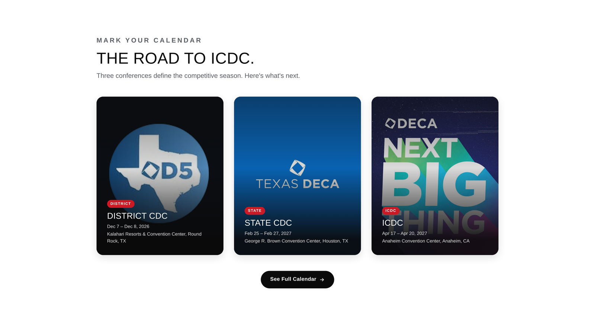
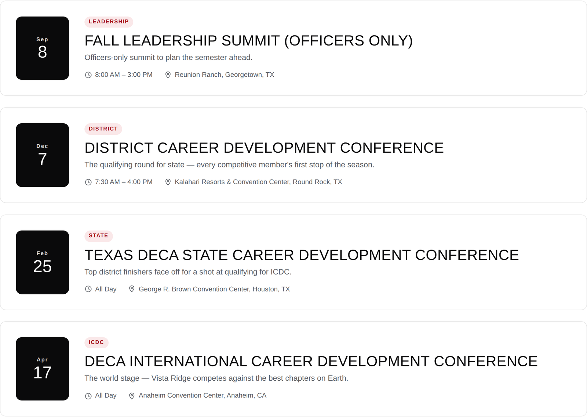
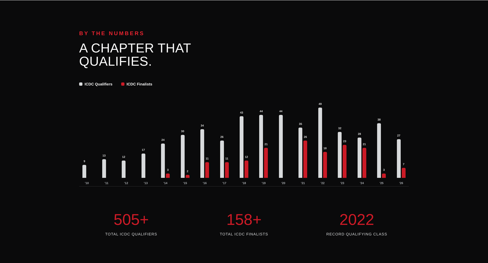
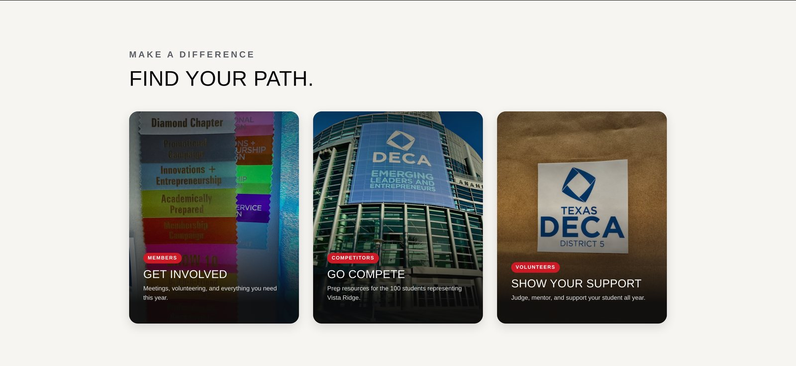
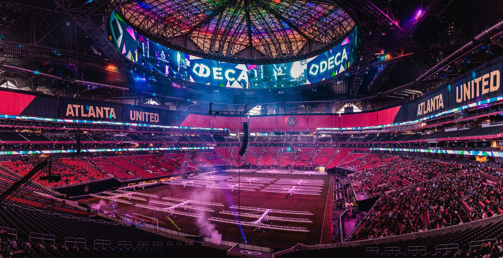

A chapter site for a 200-member DECA chapter, with a season calendar, a data-driven qualifying record, and a dedicated page for every audience.
Vista Ridge DECA is a chartered chapter of DECA Inc. at Vista Ridge High School in Cedar Park, Texas, over 200 members deep, competing in business, marketing, finance, hospitality, and management events from the district level up to the International Career Development Conference.
Roughly 200 members, four distinct audiences to speak to (competitors, general members, parents, and volunteers), and a season built around three back-to-back conferences, all running on scattered Google Classroom posts, group texts, and word of mouth. Nothing gave a prospective member, a parent budgeting for State, or a first-time volunteer a straight answer.
How might we give members, parents, competitors, and volunteers a straight path to what they need?
Every move below is an answer to that question.
I built one calendar system for a season that runs on three back-to-back conferences: District, State, and ICDC. The homepage surfaces what's next with dates and venues at a glance, and the full calendar page adds a list/grid toggle covering every chapter meeting and prep session in between. Chapter meetings, competitions, and deadlines finally live in one place instead of three.


Instead of a claim, I built a chart: sixteen years of ICDC qualifiers and finalists, plotted year over year, with the totals pulled out underneath it: 505+ qualifiers, 158+ finalists, and a record class in 2022. It's the same data an officer would quote to a prospective member or a skeptical parent, just visible on the homepage instead of buried in a chapter history nobody reads.

A member, a parent, a competitor, and a volunteer walk in with different questions, so each gets a dedicated page instead of one page trying to answer everyone. On Competitors, a two-question finder replaces a wall of event names and routes students straight to their competitive cluster, the same logic carried through Members, Parents, and Volunteers: each page answers what that visitor actually came to ask.

The chapter now has a single site that speaks to every audience it has, instead of one page trying to speak to all of them at once. Members and parents can find what they need without asking an officer first, and the qualifying record makes the chapter's case on its own.
